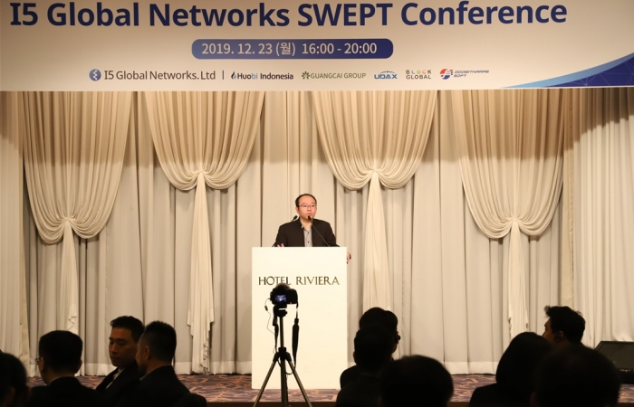

|
암호화폐로 커피도 사고, 쇼핑도 한다고? 2020. 01. 03 |
|---|
|
 광차이그룹 잭 렌 부대표 - 암호화폐로 실시간 실물 거래 가능한 SWEPT 서비스 한국 상륙- 한-중 회사 연합체 새로운 결제/송금 네트워크 구축 암호화폐를 현금이나 카드처럼 실생활에서 실시간으로 쓸 수 있는 시대가 열린다. 한-중 연합체 블록체인 기반 결제, 전송 플랫폼 SWEPT의 한국 서비스를 준비 중인 '레아프로토콜' 측은 최근 관계사들과 함께 서울에서 관련 설명회를 진행하고 새로운 서비스의 시작을 알렸다. 이날 설명회에 참석한 광차이그룹 잭 렌(Jack Ren) 부대표는 "정부 및 세계 회사들과의 협력으로 블록체인의 미래는 밝다. 한국의 거래소들과의 거래도 희망하고 있다"면서, "블록체인은 모든 업종에 다가가야 하는 분야이며, 아시아 시장의 신흥 시작은 잠재력이 무한하다고" 희망적인 전망을 내놓기도 했다. 그는 이어 "지난해만 해도 30여개 거래소가 파산할 정도로 해킹 문제가 심각했다"면서 "보안,신속성, 사용자 편의성 등의 모든 분야에서 SWEPT는 차별화된 서비스를 보여줄 것"이라고 강조했다. 중국의 거대그룹 광차이그룹과 후오비인도네시아, 유닥스, 블록글로벌 등의 회사가 한국의 두빛나래소프트의 특허기술을 활용 서비스하는 SWEPT는 그동안 허상처럼 여겨지던 암호화폐를 실물 거래에 이용할 수 있게 한 서비스. SWEPT를 통하면 암호화폐 거래소를 통한 실시간 결제 및 송금이 가능해지고 지갑에서 지갑으로 전송하는 양방향 QR 결제 시스템도 가능해진다. 이 시스템의 근간이 되는 두빛나래소프트의 특허 기술은 QR을 활용한 근거리 송수신 시스템으로 기존QR이 가진 큐싱(Qshing) 등의 보안 취약함을 해결할 수 있는 기술이다. 그동안 암호화폐는 현금화해 사용하려면 수 시간 혹은 수 일의 기간을 거쳐 사용이 가능했고 그 사이 가치의 유동성이 너무 커 실질적인 실물 결제에는 사용이 불가능하다고 보여졌던 것이 사실이다. 특히나 암호화폐를 실물 결제에 사용할 경우 10가지 이상의 단계를 거쳐야 하는 현실적 문제가 있기 때문에 그 동안 여러 시도가 있었음에도 상용화 되지 못한 한계가 있었다. 하지만 SWEPT 서비스를 사용할 경우 암호화폐 거래소가 은행 역할을 하는 셈이 되는데 사용자와 상점 모두 QR 코드를 통해 거래를 하고 양쪽의 QR 코드가 양방향으로 전송돼 QR 코드의 부정한 사용도 막을 수 있다는 장점을 가지고 있다는 것. 결국 실시간으로 생성되는 QR 코드를 사용, 역시 QR코드가 생성된 포스기를 통해 결제하는 방식을 사용해 사용자와 상점 모두 실시간으로 현금이나 신용카드를 사용하는 것 처럼 암호화폐를 사용할 수 있다. 즉 사용자가 상점 등에서 실물 거래를 할 경우 에스크로컴퍼니의 지급보증을 통해 거래소의 암호화폐를 실시간으로 지불할 수 있고 시간의 지체 없이 해당 시간의 가상화폐 가치 만큼의 물건 값을 치르는 셈이 된다. 한국에서의 SWEPT 서비스를 준비하고 있는 레아프로토콜의 안연태 대표는 "이런 방식의 실시간 거래는 탈 중앙화된 금융에서 가능한 것"이라며 "결국에는 SWEPT 서비스의 암호화폐 거래소가 비자나 마스터 카드사와 같은 역할 을 하게 될 것"이라고 전망했다. 중앙 은행을 통해 일괄되게 가치가 매겨지는 금원이 아니라 각 암호화폐 거래소에서 실시간 평가되는 가치 만큼의 금액을 신용카드 결제 처럼 사용할 수 있다는 것으로 풀이된다. 레아프로토콜은 측은 "특정 암호화폐 거래소에 국한되지 않는 무한한 확장성과 실물 재화의 연결이 가능한 가치 교환성 등 서비스의 장점을 살려 안정적인 거래 환경을 만들겠다"며 "이미 레아 페이먼트 상용화 전 협업단계는 완료 시점에 있다"고 밝혔다. 본격적인 서비스를 앞두고 있는 레아프로토콜은 2020년 상반기에는 2, 3차 거래소 상장과 국내 암호화폐 거래소 제휴 및 암호화폐 지갑 결제 지원 등의 과정을 거쳐 2021년 까지 해외 현지 암호화폐 결제 지원에까지 사업 분야를 넓힐 예정이다. |
| 출처 : 디지털투데이 (DigitalToday)(http://www.digitaltoday.co.kr) |
| 기사 보러가기 → |
| 목록 |
Society for worldwide Exchange Payment and Transfer